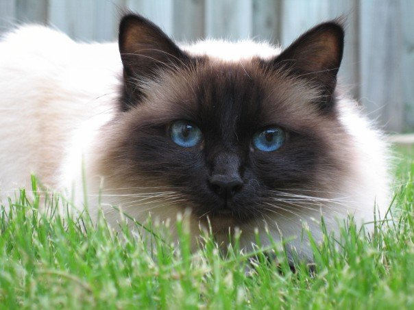

The Birman, also called the "Sacred Cat of Burma",[1] is a domestic cat breed. The Birman is a long-haired, colorpointed cat distinguished by a silky coat, deep blue eyes and contrasting white "gloves" on each paw.
The breed name is derived from Birmanie, the French form of Burma. The Birman breed was first recognized in France by the Cat Club de France in 1925, then in England by the Governing Council of the Cat Fancy[2] (GCCF) in 1966 and in United States by the Cat Fanciers' Association[3] (CFA) in 1967. It is also recognized by the Canadian Cat Association (CCA), and by The International Cat Association[3] (TICA) in 1979.
References:
This article uses material from the Wikipedia article "Birman”, which is released under the Creative Commons Attribution-Share-Alike License 3.0.
1.Cat Fanciers Association Breed Article: The Sacred Cats of Burma Retrieved Apr 16, 2010
2."Governing Counil of the Cat Fancy". Retrieved 8 October 2014.
3.TICA. "The International Cat Association". Retrieved 2007-07-08.
Picture: Berk at the English language Wikipedia [GFDL or CC-BY-SA-3.0], via Wikimedia Commons
{kind=link}